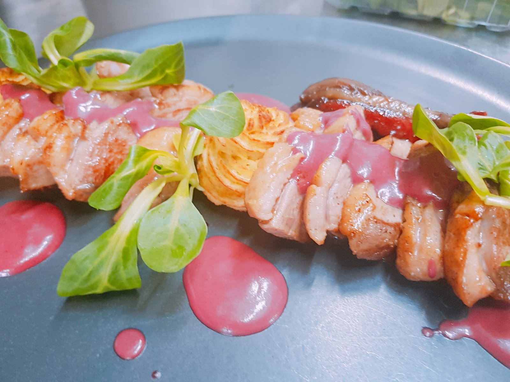
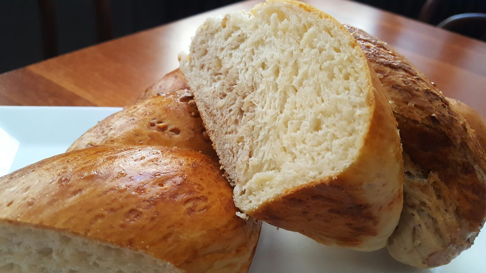

Studies and Schools Graduated

High School Diploma in Architecture and Urban Planning
Bucharest, Romania | 2000
Baccalaureate Degree
Bucharest, Romania | 2000

Professional training course - cook | 2004
Bucharest, Romania

Baker, Pastry chef, Pizzaiolo course | 2006
Verona, Italy